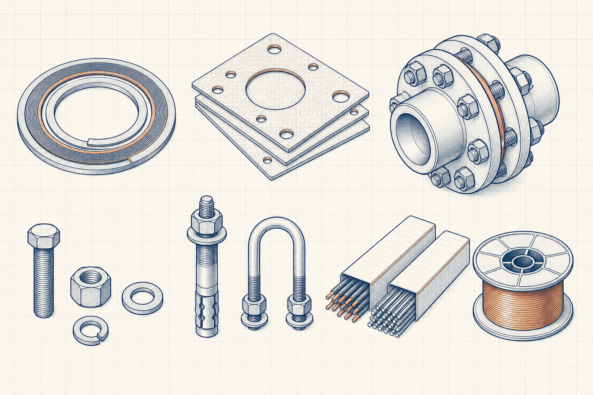

Jointing and fabrication reference guide
Stud Bolts and Threaded Rod Dimensions
Stud Bolts and Threaded Rod Dimensions is a source-governed Engineering Reference Data guide for gaskets, bolting, support hardware and welding-consumable selection context. It explains what must be identified, verified and recorded before a numerical value or table entry is used in engineering work.

- Content type
- Jointing and fabrication reference guide
- Level
- Engineering Reference Data › Gaskets, Fasteners, Hardware and Welding Consumables › Fasteners and Hardware › Bolting › Stud Bolts and Threaded Rod Dimensions
- Data status
- Source verification required before numerical publication
- Last reviewed
- 30 August 2026
What Does This Reference Cover?
Stud Bolts and Threaded Rod Dimensions is a source-governed Engineering Reference Data guide for gaskets, bolting, support hardware and welding-consumable selection context. It explains what must be identified, verified and recorded before a numerical value or table entry is used in engineering work.
Reference-Data Publication Status
A reference value is only meaningful when its source, edition, revision, material or product basis, units, test conditions and scope are known. This guide directs the reader to verify those controls before using values in a calculation, drawing, specification or procurement decision.
Key Terms and Definitions
- Stud Bolts and Threaded Rod Dimensions
- The specific reference-data subject defined by this page title.
- Bolting
- The approved Level 4 reference topic used to organise this guide.
- Fasteners and Hardware
- The Level 3 reference collection that establishes the immediate context.
- Controlled source
- A traceable source with publisher, title, edition, revision, date and applicable scope recorded.
Reference Verification Method
- Identify the exact material, product, component or dimensional subject required.
- Locate the governing source and record its publisher, title, edition, revision and publication date.
- Confirm the value’s units, conditions, product form, test basis and stated scope.
- Check that the source applies to the project specification and actual service.
- Record the verifier, review date and any conversion or interpretation before project use.
Controls Before Using Reference Data
Identification
the governing product standard, material, size, coating and traceability requirement
Basis and conditions
service pressure, temperature, fluid compatibility, joint design and installation method
Project application
approved welding procedure, inspection criteria and project quality requirements
Illustrative Reference Check
Hypothetical example — not a project value
An engineer needs a dimensional or property value for a purchase specification. Rather than copying an undated web table, the engineer identifies the governing standard edition, verifies the product form and unit basis, records the source and has the reference checked before use.
Engineering Applications
- Preparing a controlled reference basis for Stud Bolts and Threaded Rod Dimensions.
- Checking drawing, calculation, procurement and supplier data for consistency.
- Identifying the source and verification details needed before project use.
Common Mistakes and Limitations
- Mixing values from different editions, standards, unit systems or product forms.
- Using nominal dimensions or properties without confirming the required tolerance or test basis.
- Treating a general reference guide as a substitute for the governing project specification.
Frequently Asked Questions
Why are numerical tables not shown yet?
The site must publish only traceable and independently checked data. Numerical values will be added after their source, edition, scope, units and verification record are approved.
Can this page be used for procurement or fabrication now?
Use it to identify what must be verified. For a project decision, use the governing current standard, approved specification and supplier documentation.
Can different standards be treated as exact equivalents?
No. Grade and dimensional cross-references may be approximate or conditional. Verify the actual standard, product form and project requirements before substitution.
References
- ASME. B16.20 Metallic Gaskets for Pipe Flanges. ASME.
- AWS. AWS Welding Handbook. American Welding Society.
This original guide does not reproduce protected standards, data tables, figures or proprietary supplier information.